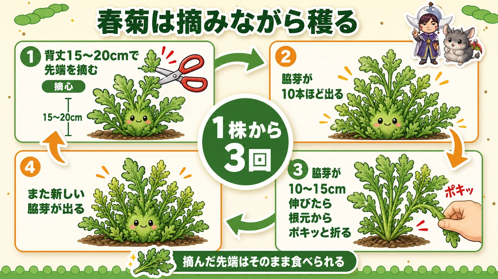
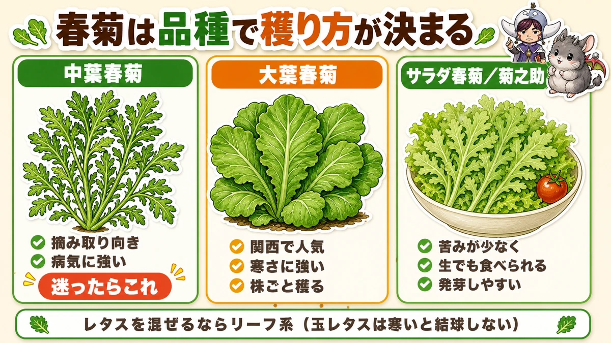
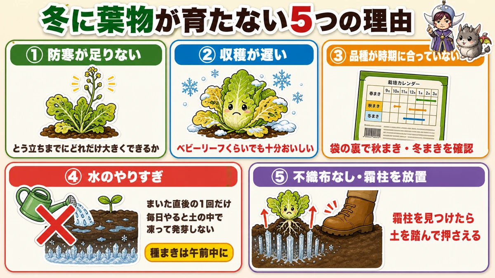
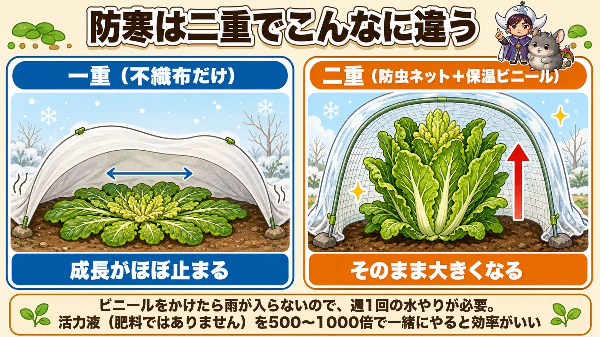

Stop pulling your leafy greens up 🥬 Pinch them instead and one plant crops three times

🥬 "Leafy greens are a one-off crop, aren't they?"
🥬 "Mine just stopped growing when winter came."
🥬 "I can't even get them to germinate."
Hello, I'm Eiko. Eight years of growing vegetables organically and without pesticides, and a teaching licence in science.
Today: leafy greens — chrysanthemum greens, mizuna, komatsuna. Unglamorous next to the big autumn vegetables, and I think they're the best value of the lot: ready in a little over a month, and depending on how you harvest, one plant can crop several times.
Which is the point of this article.
Are you pulling them up?
Pull it and that's the end. Pick it like a herb and the same plant gives you about three harvests. Knowing that changes the total yield of a bed completely.
Basics
- Family: komatsuna and mizuna are brassicas; chrysanthemum greens are in the daisy family (leave two years before repeating brassicas in the same ground)
- Sowing: autumn, or early spring for a spring crop
- Planting out: none — sow direct, in the ground or in a container
- To harvest: a little over a month for komatsuna and mizuna; about six weeks for chrysanthemum greens
Stop pulling, and you triple the harvest

What this diagram says （図解の文字）
- Pick chrysanthemum greens as you go
- 1 "at 15–20 cm tall, pinch out the tip" (pinching out)
- 2 "about ten side shoots come up" — three harvests from one plant
- 3 "when the side shoots are 10–15 cm, snap them off at the base"
- 4 "new side shoots appear again"
- "The tip you pinched out can be eaten as it is"
Leafy greens are assumed to be pulled whole, because that's how they look in a shop. In a home garden, picking beats pulling by a long way.
Chrysanthemum greens show it most clearly
- At 15–20 cm (6–8 in) tall, pinch out the tip. That's "pinching out" — cutting off the growing point, the part that extends. It feels like a waste. I thought so too
- Stopped at the top, the plant starts producing side shoots — and not one or two. About ten per plant. Block the route upward and a plant wakes all its side buds at once
- When the side shoots are 10–15 cm, snap them off at the base. No scissors needed; a twist between the fingers does it
- New side shoots come again — and you're back at step 2
Keep that going and, with luck, you pick into spring. Three rounds is a realistic target.
And don't throw away the tip you pinched out in step 1. It's perfectly edible — in fact it's the tenderest part, and plenty of people eat it standing there.
Komatsuna and mizuna: from the outside in
Same principle, different mechanism: take the outer leaves in turn.
Pick three or four outer leaves and leave the centre. New leaves come from the middle and you pick again.
Want a handful for a salad? Take exactly that much. That's the privilege of growing your own — a shop sells you the whole bag.
But the variety decides whether you can

What this diagram says （図解の文字）
- With chrysanthemum greens, the variety decides how you harvest
- Medium-leaf — "suits picking", "disease resistant", "pick this if unsure"
- Large-leaf — "popular in western Japan", "cold hardy", "harvested whole"
- Salad types — "less bitter, edible raw", "germinates readily"
- "If you're mixing lettuce in, use loose-leaf types"
Less widely known: some chrysanthemum green varieties aren't suited to picking at all.
Medium-leaf — the one for repeat picking
Side shoots come readily. The picking method above is for this type. It's also disease-resistant, which makes it easy to grow without sprays. If in doubt, this one.
Large-leaf — cold-hardy, harvested whole
Bigger leaves, stronger scent, bred to be harvested as a whole plant. Its strength is cold tolerance, so it's a reasonable choice in a cold area or if you want it standing in the ground a long time.
Salad types — for people who don't like the flavour
Less bitter and edible raw. If someone in the house dislikes the scent, they may well eat this one.
A bonus: it germinates more reliably. Chrysanthemum greens are naturally around 50 % germination, and these types come up more evenly. If yours never germinate, changing variety may be the whole fix.
Mixing in lettuce? Use loose-leaf
Avoid hearting lettuce — in the cold it never hearts up and the season simply ends. Loose-leaf types can be picked from the outside over a long period, which suits the whole picking approach.
Five reasons greens stop growing in winter

What this diagram says （図解の文字）
- Five reasons leafy greens don't grow in winter
- ① Not enough cold protection — "how big you can get it before it bolts is what matters"
- ② Harvesting too late — "baby-leaf size is plenty good enough"
- ③ Variety wrong for the season — the calendar shown is for Japan (September to March, with a spring-sown option)
- ④ Overwatering ／ ⑤ no fleece
① Not enough cold protection
Growth stalls in the cold and the plant meets spring still small — then bolts (runs to flower) without ever getting big.
What matters is how large you can get it before it bolts, and that's what protection buys you.
② Harvesting too late
Cold-season greens never reach the usual size. Wait for "a bit bigger" and frost yellows the leaves.
Baby-leaf size tastes excellent — more tender, in fact. Pick early.
③ Variety wrong for the season
Spinach has summer-sowing varieties too. Buy without reading the packet and you sow the wrong one. Check the back of the packet. Tedious, and it matters.
④ Overwatering
Cold-season only, and quite deadly. For a cold-weather sowing, water once when you sow and leave it. Water daily and it freezes in the soil, and the seed is lost.
And: sow in the morning. Sow and water in the afternoon and it can freeze overnight.
⑤ No fleece, and frost heave left alone
Horticultural fleece is close to essential for greens in the cold. It raises soil temperature and reduces drying, and you simply lay it over — no structure needed.
The other thing to watch is frost heave. When needle ice forms, it lifts the soil and the plants with it, roots and all. A just-germinated seedling dies from this.
The fix is simple: when you see it, tread the soil back down. Fleece also makes heave less likely, so it helps here too.
Doubling the cover changes the plant's shape

What this diagram says （図解の文字）
- A double cover makes this much difference
- Single (fleece only) — "growth more or less stops"
- Double (insect net + clear plastic) — "it carries on getting bigger"
- "Under plastic no rain gets in, so it needs watering once a week"
- "Add a root tonic (not a fertiliser) at 1:500–1000 at the same time"
Side by side, the difference is unmistakable. Same spinach variety, sown the same day; one under fleece alone, the other under insect netting plus clear plastic.
- Single cover: the leaves flatten onto the soil, spreading outward in a rosette instead of growing up
- Double cover: the leaves stay upright and simply keep growing
Same plot, same day. So when it turns cold, layer them: fleece, insect netting, clear plastic. One extra layer changes the time to harvest considerably.
Plastic means you have to water
One caution. Under plastic, no rain gets in, so you water — about once a week.
And that watering is a good moment for a root tonic. This is not a fertiliser.
As above, greens need almost no feeding, and adding liquid fertiliser on top of base fertiliser pushes the nitrogen too high and draws pests. A root tonic is different: it isn't a nutrient, it's a material that helps the roots establish. Growing organically, feeding mid-season is awkward anyway — granules take over a month to break down — so something that supports growth without adding fertiliser is genuinely useful.
Dilute 1:500 to 1:1000. One watering can a week means a single bottle lasts a year, and since it isn't a fertiliser, a slightly strong mix does no real harm.
Science bit: why do leaves flatten in the cold? 🔬
That flattened shape has a name: a rosette, after the arrangement of rose petals.
The plant isn't giving up. It's a survival mode. Three reasons:
- It's warmer near the ground. Soil stores the day's heat, so just above the surface is warmer than the air. So the plant keeps low
- It avoids the wind. Standing tall means taking cold wind full on; lying flat lets it pass overhead
- No leaf shades another. Spread in a circle, every leaf gets light — using scarce winter sun without waste
Unable to move, it is nonetheless being extremely rational.
The familiar example is a dandelion: those flat winter rosettes on waste ground are exactly the same thing, for exactly the same reasons.
To sum up
- ✅ Don't pull them up. Pinch the tip → ten side shoots → snap them at 10–15 cm. Three harvests per plant
- ✅ Komatsuna and mizuna: three or four outer leaves at a time, leave the centre
- ✅ For picking, use medium-leaf; for cold, large-leaf; for fussy eaters, the salad types. Lettuce: loose-leaf
- ✅ Winter failures: too little protection, picking too late, wrong variety, too much water, no fleece
- ✅ Cold-season sowing: in the morning, watered once
- ✅ Double the cover. Under plastic, water weekly — a root tonic, not a fertiliser
Sow one packet of medium-leaf chrysanthemum greens and take it as far as pinching out the tip. When the side shoots come, you'll probably say "oh — they really do" 🥬
Thank you for reading!